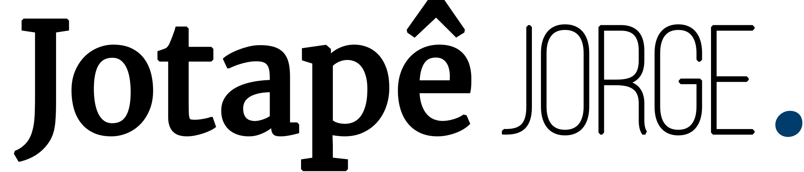

Sobre
Editor de vídeo com experiência em jornalismo, motion design e produção de conteúdo para mídias digitais. Atuo com vídeo-ensaios, publicidade, animação e fluxos de edição utilizando Adobe Premiere.